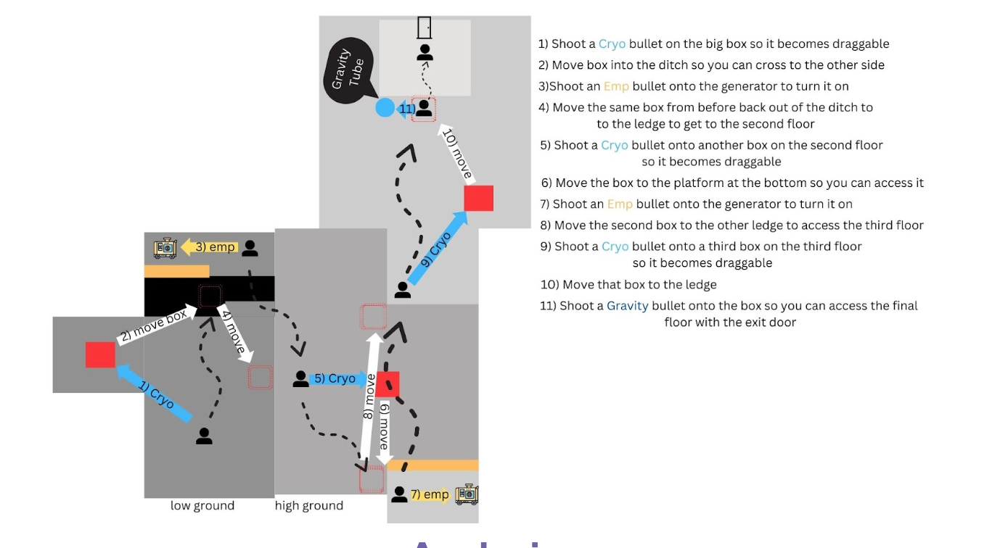
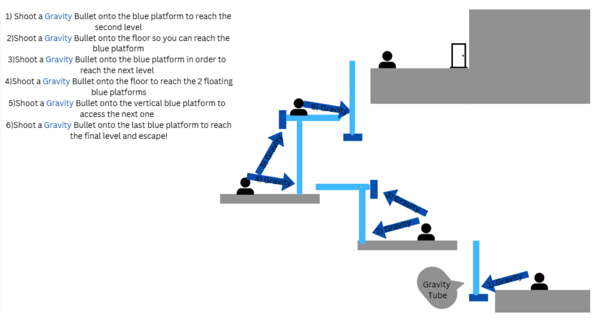

Gunslinger Breakout is a 3D FPS puzzle game built around a revolver loaded with special ability bullets. Players can choose from six unique shot types — Cryo, Ricochet, Airburst, Power Charge, Gravity, and Persist to solve puzzles and escape increasingly challenging rooms. I worked on content design establishing the different bullets as well as level design for all of the game’s levels.
When designing bullets we wanted to avoid “lock and key” designs, use this to solve this, that did not allow for dynamic gameplay and puzzles. The only bullets we included that were like this were the ricochet bullet and the emp bullet. Even still, these provide a spin to the typical “shoot this to do this” archetype by making ricochet, that you have to strategically aim, and emp that allows you to turn things on AND off, for a little bit more dynamic gameplay. Aside from these, the rest all promote dynamic, physics based puzzle solving. Cryo allows both the player and objects to slide which can create dynamic solutions to puzzles that might not have been intended, but creative solutions are always a good thing. Airburst is similar but instead launches either the player or objects. Gravity allows players to reach far areas and move objects in more precise ways as opposed to airburst. Finally persist allows players to put objects places or stop certain moving surfaces or objects to solve puzzles.
For this level the player must use 3 different bullets in a creative way in order to escape the level. They must realize that using just gravity bullets to get up the ledges does not leave them with enough bullets to fully solve the level. Therefore, they must use the boxes with a cryo bullet so they can move it and get up on multiple ledges using only 1 bullet. This mechanic is shown and developed throughout the level which encourages the player to think out of the box and use their resources efficiently in order to solve the level.
For this Level the player must use the gravity bullet to reach the top of the level and escape. This is an intro level for the gravity bullet mechanics and it teaches the player gradually certain ways it can be used to move the player around a level. The player is initially presented with a blue platform that they must figure out to shoot with the gravity bullet in order to reach the next platform. The challenge ramps up as they must use 2 gravity bullets to reach the third platform and 3 bullets to reach the final platform and complete the level.
